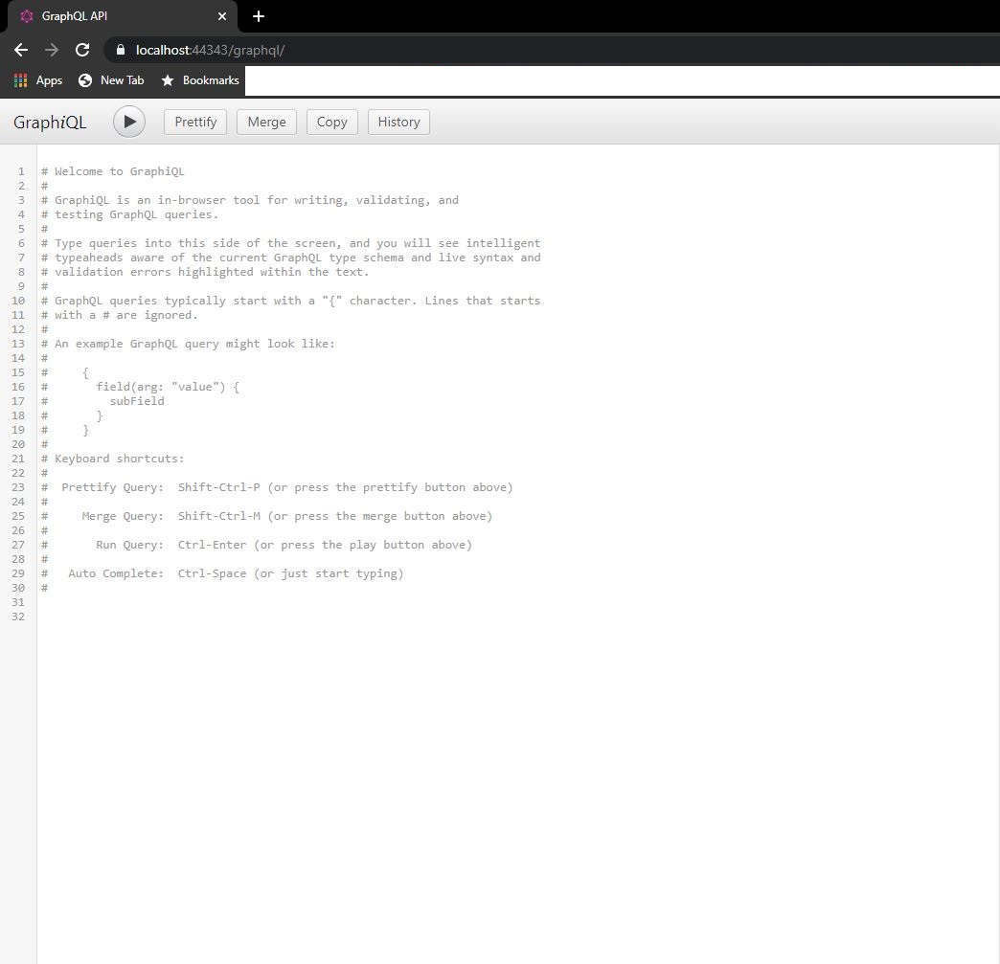

GraphQL API with .Net Core 3.1
Prerequisites
You should have Visual Studio 2019 with .Net Core 3.1 installed on your system.
Getting Started
1. Open Visual Studio 2019.
Click Create New Project and Select ASP.Net Core Web Application. Press Next button at right bottom.

2. On Next screen Enter Project Name. For Current example it is GraphQLProject. Press Create button at right
bottom.
3. On the next screen select items as shown in below image. Press Create button at right bottom.
4. Once the Project is created install below Nuget packages. TO install these packages open Solution Explorer >>
Right click on the project >> Select Manage Nuget package.
From Browse Tab, search for below packages and install them.
1. GraphQL Version 2.4.0
2. GraphiQL Version 2.0.0
3. GraphQL.Server.Transports.AspNetCore Version 3.4.0
5. Open the Startup.cs class and add namespace
using GraphiQl;
Change Configure method like below:
public void Configure(IApplicationBuilder app, IWebHostEnvironment env)
{
if (env.IsDevelopment())
{
app.UseDeveloperExceptionPage();
}
app.UseGraphiQl("/graphql");
app.UseMvc();
app.UseRouting();
}
Configure is used to set up middlewares, routing rules, etc
Now run the application. The page will be shown like below:

Building Entities
Now create the below entities. For this right click on the project and Add New Folder. Add below classes
publicclass Employee
{
public int Id { get; set; }
public string FirstName { get; set; }
public string LastName { get; set; }
public int Salary { get; set; }
}
Build Repository class. For current example instead of fetching data from database, we will fetch data from hard
coded collection.
public class EmployeeRepository
{
private readonly List<Models.Employee> _employee = new List<Models.Employee>();
public EmployeeRepository()
{
Models.Employee employee1 = new Models.Employee
{
Id = 1,
FirstName = "First Name 1",
LastName = "Last Name 1",
Salary = 1000
};
Models.Employee employee2 = new Models.Employee
{
Id = 2,
FirstName = "First Name 2",
LastName = "Last Name 2",
Salary = 2000
};
Models.Employee employee3 = new Models.Employee
{
Id = 3,
FirstName = "First Name 3",
LastName = "Last Name 3",
Salary = 3000
};
_employee.Add(employee1);
_employee.Add(employee2);
_employee.Add(employee3);
}
public List<Models.Employee> GetAll()
{
return _employee;
}
public Models.Employee GetById(int id)
{
return _employee.Where(x => x.Id == id).FirstOrDefault();
}
}
Build Service class. This class will fetch data from the repository.
public class EmployeeService
{
private EmployeeRepository _employeeRepository ;
public EmployeeService(EmployeeRepository employeeRepository)
{
_employeeRepository = employeeRepository;
}
public List<Models.Employee> GetAll()
{
return _employeeRepository.GetAll();
}
public Models.Employee GetById(int id)
{
return _employeeRepository.GetById(id);
}
}
Build GraphQL Schema.
To query data using GraphQL, you should create a type that extends ObjectGraphType
and pass the entity type
as an argument. You should also register the properties of the class as “Field” types so that GraphQL can
recognize this type.
To achieve this, create a folder for Types and create the Employee class as shown below.
public class EmployeeType : ObjectGraphType<Models.Employee>
{
public EmployeeType()
{
Name = "Employee";
Field(_ => _.Id).Description("Employee Id");
Field(_ => _.FirstName).Description("Employee First Name");
Field(_ => _.LastName).Description("Employee Last Name");
Field(_ => _.Salary).Description("Employee Salary");
}
}
Build Query class.
Now you need a class that will fetch data of the employees. This class with extend ObjectGraphType. The below
namespace will be required:
using GraphQL.Types;
using GraphQLProject.OType;
To achieve this create a folder for Query and
EmployeeQuery class like below.
public class EmployeeQuery : ObjectGraphType
{
public EmployeeQuery(Service.EmployeeService employeeService)
{
int id = 0;
Field<ListGraphType<EmployeeType>>(
name: "employees", resolve: context =>
{
return employeeService.GetAll();
});
Field<EmployeeType>(
name: "employee",
arguments:new QueryArguments(new QueryArgument<IntGraphType> { Name="id"}),
resolve: context =>
{
return employeeService.GetById(id);
});
}
}
Now create the GraphQL DTO and Schema class. The schema will extend the GraphQL.Types.Schema class.This will
make your query known and available to GraphQL.
This class accepts the DependencyResolver that is added to the services collection in the ConfigureServices
method of the Startup class.
public class GraphqlDTO
{
public string OperationName { get; set; }
public string NamedQuery { get; set; }
public string Query { get; set; }
public JObject Variables { get; set; }
}
Below namespaces will be required for the below class:
using GraphQL;
using GraphQL.Types;
using GraphQLProject.Query;
public class EmployeeSchema : Schema
{
public EmployeeSchema(IDependencyResolver resolver):
base(resolver)
{
Query = resolver.Resolve<EmployeeQuery>();
}
}
Add Controller Class.
[Route("graphql")]
[ApiController]
public class GraphQLController : ControllerBase
{
private readonly IDocumentExecuter _documentExecuter;
private readonly ISchema _schema;
public GraphQLController(ISchema schema, IDocumentExecuter documentExecuter)
{
_schema = schema;
_documentExecuter = documentExecuter;
}
[HttpPost]
public async Task<IActionResult> PostAsync([FromBody] GraphqlDTO query)
{
if (query == null) { throw new ArgumentNullException(nameof(query)); }
var inputs = query.Variables.ToInputs();
var executionOptions = new ExecutionOptions
{
Schema = _schema,
Query = query.Query,
Inputs = inputs
};
var result = await _documentExecuter.ExecuteAsync(executionOptions);
if (result.Errors?.Count > 0)
{
return BadRequest(result);
}
return Ok(result);
}
}
Now modify the Startup.cs class and change the ConfigureServices emthod like below:
public void ConfigureServices(IServiceCollection services)
{
services.AddScoped<IDependencyResolver>(_ => new FuncDependencyResolver(_.GetRequiredService));
services.AddSingleton<IDocumentExecuter, DocumentExecuter>();
services.AddScoped<IDocumentWriter, DocumentWriter>();
services.AddScoped<EmployeeService>();
services.AddScoped<EmployeeRepository>();
services.AddScoped<EmployeeQuery>();
services.AddScoped<EmployeeType>();
services.AddScoped<ISchema, EmployeeSchema>();
services.AddControllers(options => options.EnableEndpointRouting = false);
}
Here we are adding all the required dependency of the classes.ConfigureServices is used to configure Dependency Injection.
Now the solution explorer of your project will look like below :
Run the appliction.
Now run the application. The default browser will be opened and the default GraphQL page will be opened as mentioned in Step 5.
Execute the below queries from the browser and you will get the result as shown below: